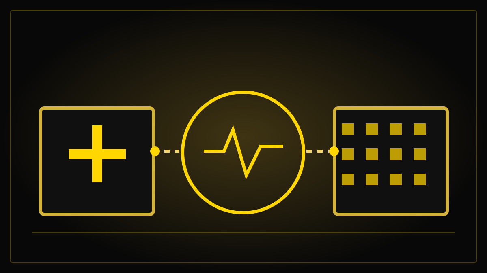

FORBEREDELSER – IKKE PUBLISERT
Helse og velferd – artikler under arbeid
To kildelagte bakgrunnsartikler er forberedt for individuell og fortløpende publisering. Helsereformutvalgets rapport er varslet 2. november kl. 11.00. Ved publisering etter rapportframleggelsen må begge tekstene gjennomgås og oppdateres mot originaldokumentet. Se alle redaksjonelle utkast.

Helsereformen: Dette er spørsmålene utvalget skal svare på
Organisering, finansiering, personell, teknologi og pasientens plass i systemet.
14 helsepiloter prøver å tette gapet mellom sykehus og kommuner
Vi ser på konkret utprøving i Oslo, Vestfold, Kongsberg, Agder og Tromsø.
Sjekk før artiklene om helsereform publiseres
- Kl. 11.00: Les den publiserte utredningen og se regjeringens presentasjon. Regjeringens kilde og strømmeside.
- Skil tydelig mellom utvalgets anbefalinger, regjeringens reaksjon og faktisk vedtatt politikk.
- Kontroller tall, økonomiske konsekvenser, eventuelle mindretall og forbehold i NOU-en.
- Undersøk reaksjoner fra pasientorganisasjoner, kommunesektoren og helsepersonell. Innhent samtidig svar ved kritikk.
- Oppdater begge bakgrunnssakene etter at innholdet er offentlig; skriv eventuelt en egen nyhetsartikkel om hovedfunnene.
- Publiser hver godkjente artikkel fortløpende i relevant nyhetsstrøm. Dater større endringer. Det er ingen felles utgivelsesdato.